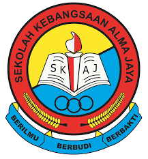

My Education Journey
My Education Journey: Building Foundations and Shaping Aspirations Education is a significant part of one's life, shaping not only knowledge but also character and aspirations. My educational journey, spanning from primary school through to my diploma studies, has been an enriching experience, filled with learning, growth, and the development of lifelong passions. Primary School: Laying the Foundation My educational journey began at SK Alma Jaya in Penang. These early years were crucial in shaping my academic interests and social skills. Primary school was a time of exploration and discovery, where I developed a genuine love for learning. In primary school, I was particularly drawn to Science and English. Science classes ignited my curiosity about the natural world, fostering a sense of wonder and inquiry. English, on the other hand, enhanced my communication skills, allowing me to express my thoughts and ideas effectively. My teachers played a pivotal role in nurturing these interests, encouraging me to participate in various science fairs and literary competitions. Moreover, primary school was where I formed lasting friendships and learned the importance of teamwork and collaboration. Group projects and extracurricular activities such as the school choir and sports teams taught me valuable lessons in cooperation and leadership. These experiences laid a strong foundation for my future academic and personal endeavors. Secondary School: Broadening Horizons As I transitioned to Bukit Mertajam, Highschool my educational journey took on new dimensions. Secondary school was a period of significant academic and personal growth. Here, I delved deeper into subjects that fascinated me, while also discovering new areas of interest. In secondary school, I excelled in subjects such as Mathematics and History. Mathematics honed my analytical and problem-solving skills, while History provided insights into the events and forces that shaped our world. I also took part in various extracurricular activities, including the debate club and the school's science club. These activities not only enhanced my knowledge but also helped me develop critical thinking and public speaking skills. One of the highlights of my secondary school years was participating in the annual science fair, where I presented a project on renewable energy. This experience sparked a keen interest in sustainable technologies, a passion that continues to influence my academic pursuits. Secondary school also offered numerous opportunities for personal growth. Leadership roles in student council and volunteer work in community service projects taught me the importance of responsibility and empathy. These experiences prepared me for the challenges and opportunities of higher education. Diploma Studies: Specializing and Deepening Knowledge Currently, I am pursuing a diploma in Information Management at University Technology Mara UiTM Kedah Branch. This phase of my education journey has been the most specialized and intensive, allowing me to delve deeply into my chosen field and acquire practical skills. The coursework in my diploma program has been both challenging and rewarding. I have gained in-depth knowledge in subjects such as [Relevant Subjects], and have had the opportunity to apply this knowledge through hands-on projects and internships. These experiences have provided me with a solid understanding of the theoretical and practical aspects of my field. Additionally, my diploma studies have involved participation in various student organizations and industry events. These activities have not only broadened my professional network but also exposed me to the latest trends and developments in my field. Engaging with professionals and peers has been invaluable in shaping my career aspirations and goals. Moreover, the supportive environment at University Technology Mara UiTM Kedah Branch has been instrumental in my academic success. The faculty members are not only knowledgeable but also approachable and encouraging. Their guidance and mentorship have been crucial in helping me navigate the complexities of higher education.